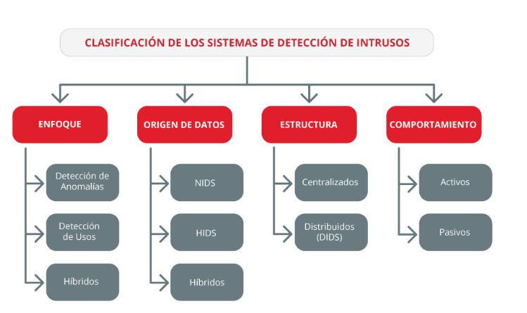
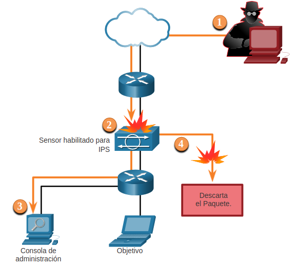
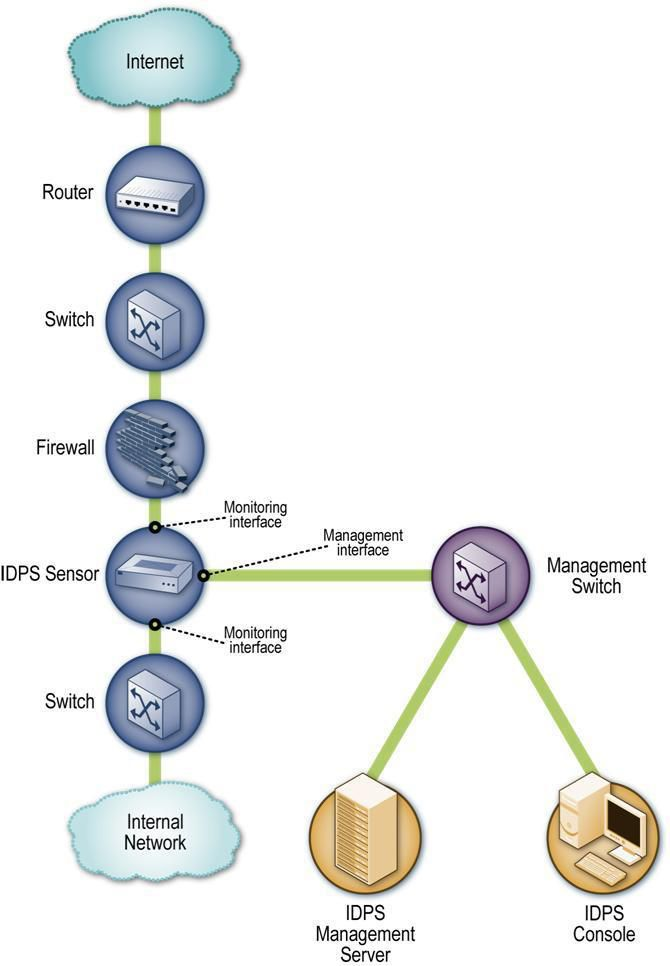
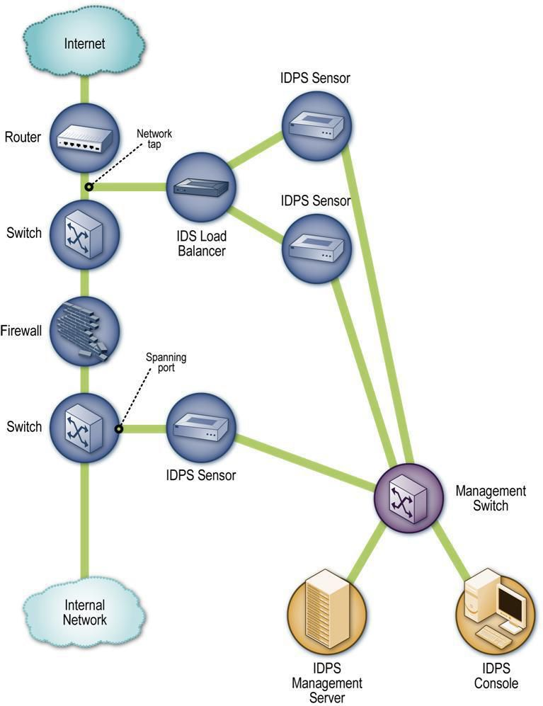

2.1 Sistema de detección y prevención de intrusos (IDS/IPS)
1. IDS (Host Intrusion Detections System)
Un IDS es un dispositivo o aplicación que analiza paquetes completos, tanto cabeceras como la carga últil (payload), en busca de eventos conocidos. Cuando se detecta un evento se genera un mensaje de log.

Figura 1. Clasificación de los sistemas de detección de intrusos.
Los IDS no llegan a detener el ataque por su propio sistema, para ello necesitan herramientas adicionales que colaboren en la labor de parar el ataque una vez identificado.
Se pueden encontrar dos tipos de módulos auxiliares:
- HIDS: son sistemas de detección de intrusos basados en host, enfocados a una sola máquina. Pueden aplicar medidas para la protección. Ejemplos: Ossec, Wazuh, Samhain.
- NIDS: son sistemas de detección de intrusos de red automáticos a tiempo real, se centra en la monitorización de los datos que circulan a través de la red a la que están en contacto con los hosts. Ejemplos: Snort, Suricata, Bro, Kismet.
2. IPS (Intrusion Prevention System)
IPS (Intrusion Prevention System) es una herramienta que permite la prevención de los ataques, normalmente ejerce el control de acceso a una red. Los IPS están muy relacionados con los IDS y se consideran como una extensión de estos.
El IPS analiza paquetes completos, tanto cabeceras como payload en busca de eventos conocidos. Cuando se detecta un evento conocido se trata con una acción (drop, reject, alert, pass).
Dentro de los IPS existen categorías:
1. NIPS
Basados en red, buscan tráfico de red sospechoso. Los NIPS se fabrican utilizando circuitos integrados de alta velocidad específicos de la aplicación (ASIC) y procesadores de red, que se utilizan para el tráfico de red de alta velocidad.
Los NIPS detectan intrusos bajo los siguientes métodos:
- Detección basada en firmas.
- Detección basada en anomalías.
- Detección de análisis de estado de protocolo.
2. WIPS
Basados en Wireless, buscan en la red inalámbrica tráfico sospechoso. Un WIPS compara las direcciones MAC de todos los puntos de acceso inalámbrico en una red con las firmas conocidas de puntos de acceso inalámbrico previamente autorizados y conocidos y alerta a un administrador cuando se encuentra una discrepancia.
3. NBA
Basados en el comportamiento de la red, examinan el tráfico inusual como ciertas formas de malware, ataques de denegación de servicios o violaciones de las políticas de seguridad.
4. HIPS
Por definición, HIPS es un paquete de software instalado que monitoriza un solo host en busca de actividad sospechosa mediante el análisis de eventos que ocurren dentro de ese host. En otras palabras, un Sistema de prevención de intrusiones de host (HIPS) tiene como objetivo detener el malware al monitorizar el comportamiento del código.
En la siguiente figura, se describe cómo un IPS maneja el tráfico denegado.
- El actor de la amenaza envía un paquete destinado al equipo objetivo.
- El IPS intercepta el tráfico y lo evalúa contra amenazas reconocidas y con las políticas configuradas.
- El IPS envía un mensaje de registro a la consola de administración.
- El IPS descarta el paquete.

Figura 2. Funcionamiento de IPS.
3. IPS de nueva generación
A medida que avanzan las tecnologías, dispositivos y sistemas, se desarrollan nuevas herramientas para hacer frente a las demandas.
La nueva generación de IPS obtiene una visibilidad del comportamiento de la red, de los equipos, de los usuarios y las aplicaciones. Con esta información almacenada, sirve de prevención para realizar una evaluación y llegar a tener un proceso automático.
Los NGIPS (IPS de nueva generación) tienen las siguientes características:
- Permanecen continuamente en línea, sin interrumpir el funcionamiento de una red.
- Tienen la capacidad de identificar aplicaciones e implementar políticas de seguridad, a nivel de la capa de aplicación, en la red.
- Conciencia sobre los tipos de archivos en los paquetes de datos, debe inspeccionar y clasificarlos.
- Cuenta con una mejor agilidad al ser capaz de integrar nuevos mecanismos para hacer cara a futuras amenazas.
- Las herramientas de monitorización más conocidas que nos podemos encontrar son las siguientes, nos ofrecen distintos modos y enfoques.
Las herramientas de monitorización más conocidas que nos podemos encontrar son las siguientes, nos ofrecen distintos modos y enfoques.
os y enfoques.
Descubrimientos de activos
Prads, es un sistema pasivo de detección de activos en tiempo real de cogido abierto. Escucha pasivamente el tráfico de la red y recopila información sobre los hosts y los servicios que envían tráfico. Trazar un mapa de su red sin realizar un escaneo activo (nunca se envían paquetes), lo que le permite enumerar los servicios y hosts activos, también monitoriza los cambios.Nmap, es un programa gratuito de código abierto. Originalmente creado para el escaneo de puertos, pero actualmente identifica redes, hosts disponibles en la red, servicios (nombre y versión) los hosts, versión de los sistemas operativos, filtro de paquetes/firewalls en uso y permite guardar el escaneo en texto. Nmap se puede emplear en cualquier plataforma, Prads está enfocado para sistemas FreeBSD y GNU/Linux. Nmap aparte de tener más funcionalidades, ofrece una interfaz gráfica para mejorar la experiencia.
Detección de amenazas
OSSEC, es un sistema HIDS de código abierto y gratuito para el uso, que funciona como un gestor de incidentes de seguridad. Brinda una gestión centralizada para la gestión de políticas, detección de rootkits, alertas en tiempo real y respuesta activa. Monitoriza y analiza los eventos del sistema operativo, y hace comprobaciones de integridad sobre los ficheros.
Snort, es un sistema de detección de intrusos basado en red, libre y gratuito. Usa una serie de reglas que ayudan a inspeccionar la actividad de red malintencionada y usa esas reglas para encontrar paquetes que coincidan con ellas, después genera alertas para los usuarios.
Suricata, es un sistema de detección de intrusos basado en red, gratuito y de código abierto. Detecta las intrusiones a tiempo real previene estas intrusiones también en línea y monitoriza la seguridad en la red. También hace uso de reglas para supervisar el tráfico de red.
OSSEC, Snort y Suricata cuentan con multiplataforma, Snort proporciona una interfaz gráfica, permite guardar los logs para un análisis sin red.
Monitorización
Fprobe, herramienta basada en Libpcap que recopila datos de tráfico de red y los emite como flujos del protocolo de red NetFlow hacia el colector especificado. Los dispositivos que tengan compatibilidad con el protocolo NetFlow recopilarán el tráfico y reenviarán los datos hacia un servidor para hacer un análisis detallado.Tcpdump, es un sniffer (programa que se ocupa de capturar y analizar paquetes en movimiento) del tráfico de red. Esta herramienta nos proporciona información de dónde provienen los paquetes entrantes y hacia dónde van los salientes en tiempo real.
Nagios, herramienta de monitorización de código abierto, que permite el análisis tanto de los equipos como de los servicios, alertando de un mal comportamiento si lo encontrara. Cuenta con monitorización de los servicios de red, de los recursos del hardware y con posibilidad de una administración remota.
Fprobe está enfocado para sistemas Debian, Ubuntu y otras distribuciones Linux. Tcpdump trabaja en la mayoría de distribuciones Linux mediante Libpcap y tiene la posibilidad de usarse en Windows con el nombre de Windump, permite guardar el análisis para analizarlos sin red. En cambio, Negios se aplica en GNU/Linux, y en algunas variantes de Unix, cuenta con la posibilidad de una interfaz web.
Evaluación de vulnerabilidad
OpenVas, es un escáner de vulnerabilidades de la red, de código abierto, que permite la evaluación de aquellas que se encuentren y el control de accesos e intrusiones y tanto su gestión.
Nikto, es un escáner de vulnerabilidades de servidores web, de código abierto, donde se encarga de la detección de configuraciones incorrectas y sus vulnerabilidades, detectando ficheros de instalación por defecto, listando la estructura del servidor, su versión y fechas de las actualizaciones mediante test XSS, ataques de fuerza bruta por diccionario.
OpenVas cuenta con un portal web para su administración y es multiplataforma. Nikto nos da la posibilidad de guardar los reportes y se puede usar en dockers y en Kali.
4. Errores en IDS/IPS
Los errores que se pueden producir son los siguientes:
- Verdaderos positivos (TP): Intrusión existente y correctamente detectada.
- Falsos positivos (FP): Intrusión no existente e incorrectamente detectada.
- Falsos negativos (FN): Intrusión existente y no detectada.
- Verdaderos negativos (TN): Intrusión no existente y no detectada.
4. Captura de tráfico
|  |  |
| Figura 3. Captura de tráfico. | Figura 4. Captura de tráfico. |
Obra publicada con Licencia Creative Commons Reconocimiento No comercial Compartir igual 4.0